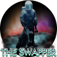
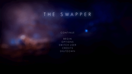
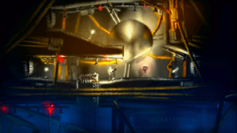
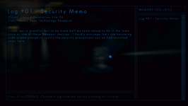
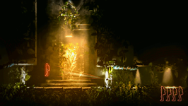
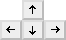
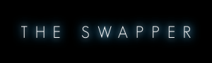

The Swapper
Dieser Artikel wurde für die folgenden Ubuntu-Versionen getestet:
Ubuntu 14.04 Trusty Tahr
Zum Verständnis dieses Artikels sind folgende Seiten hilfreich:

Die Grenzen zwischen Körper und Seele, Sein und Nicht-Sein verschwimmen im herausfordendern Puzzle-Platformer The Swapper  , als ein namenloser Astronaut auf einem verlassenen Raumschiff am Rande des Universums landet und dort ein merkwürdiges Gerät findet, mit dem er an Klone seiner selbst erzeugen und seinen Körper mit ihnen tauschen kann. Ausgestattet mit diesem so mächtigen wie fragwürdigen Werkzeug gelangt er an vormals unzugängliche Orte, öffnet verschlossene Türen und dringt dabei nicht nur immer tiefer ins Herz der Raumstation, sondern auch in die Geheimnisse ihrer verschollenen Besatzung vor …
, als ein namenloser Astronaut auf einem verlassenen Raumschiff am Rande des Universums landet und dort ein merkwürdiges Gerät findet, mit dem er an Klone seiner selbst erzeugen und seinen Körper mit ihnen tauschen kann. Ausgestattet mit diesem so mächtigen wie fragwürdigen Werkzeug gelangt er an vormals unzugängliche Orte, öffnet verschlossene Türen und dringt dabei nicht nur immer tiefer ins Herz der Raumstation, sondern auch in die Geheimnisse ihrer verschollenen Besatzung vor …
|  |  |
| Spiel-Menü | In einer verlassenen Raumstation … |
|  |  |
| … findet ein einsamer Astronaut … | … mehr über ein Klonexperiment heraus. |
Installation¶
Ein Grafiktreiber mit 3D-Beschleunigung ist erforderlich.
Hinweis:
Intel-HD-Grafikchips werden derzeit nicht offiziell unterstützt.
Spieldateien beziehen¶
Das Spiel ist direkt bei den Entwicklern , im Humble Store und mit DRM bei Steam erhältlich.
Wer das Spiel nicht bei Steam erwirbt, lädt die Datei TheSwapper_linux_1393032248.sh (die Zahlenfolge kann sich unterscheiden und muss dann im Folgenden angepasst werden) in ein beliebiges Verzeichnis herunter und führt sie dort im Terminal [1] aus:
sh TheSwapper_linux_1393032248.sh
Daraufhin wird das selbsterklärende Installationsprogramm gestartet. Damit der während der Installation automatisch angelegte Programmstarter [2] ein Symbol anzeigt, lädt man die Bilddatei TheSwapper.png  ins Spielverzeichnis herunter, z.B. in ~/Spiele/TheSwapper.
ins Spielverzeichnis herunter, z.B. in ~/Spiele/TheSwapper.
Steuerung¶
| Tastenkürzel | |
| Taste(n) | Funktion |
|  | Steuerung |
| ↑ oder | Springen |
| E | Objekt benutzen |
| S | Objekt greifen |
| F | Terminal-Einträge lesen |
| Q | Karte |
 | Klon besetzen |
 | Klon erzeugen |
| Esc | Menü |
Infobox¶
| The Swapper | |
| Genre: | Puzzle-Platformer |
| Sprache: | |
| Veröffentlichung: | 30.03.2013 |
| Entwickler: | Facepalm Games |
| Systemvoraussetzungen: | Empfohlen: 1 GB Festplattenspeicher, 2 GHz-Prozessor, 1 GB Ram, OpenGL-3.0-fähige Grafikkarte mit 512 MB Videospeicher (Nvidia GeForce 8800, AMD Radeon HD4800 oder vergleichbarer Grafikchip) |
| Medien: | Download |
| Läuft mit: | nativ |

- Erstellt mit Inyoka
-
 2004 – 2017 ubuntuusers.de • Einige Rechte vorbehalten
2004 – 2017 ubuntuusers.de • Einige Rechte vorbehalten
Lizenz • Kontakt • Datenschutz • Impressum • Serverstatus -
Serverhousing gespendet von